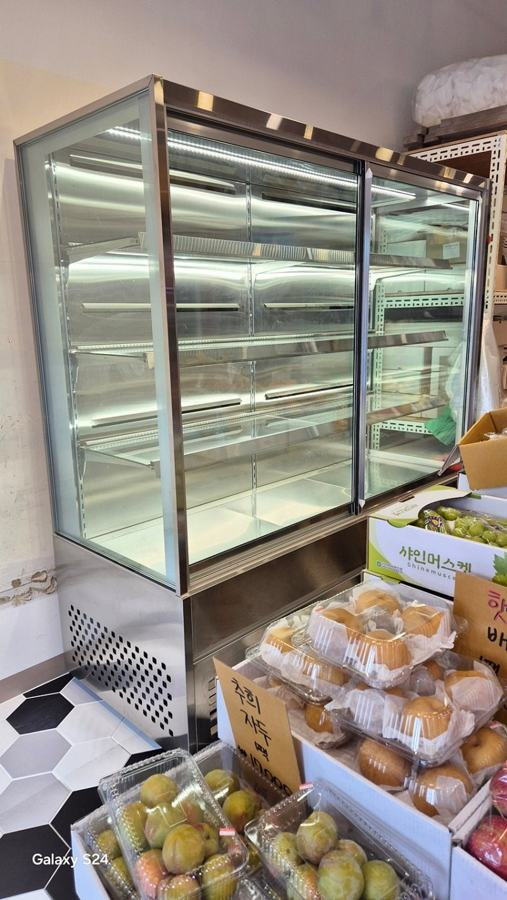
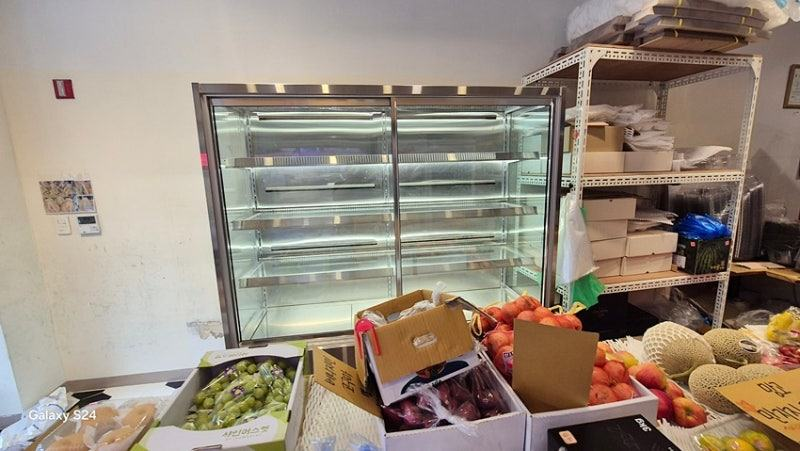
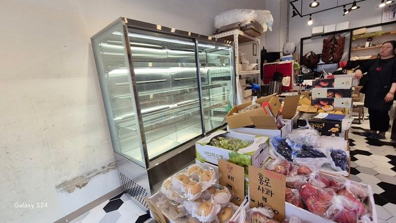
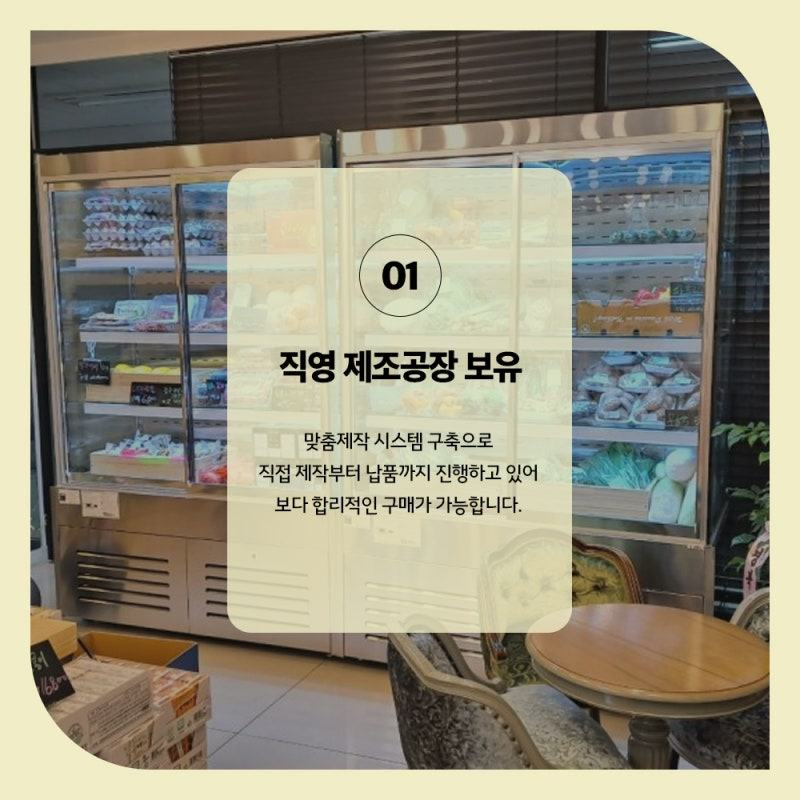

과일진열쇼케이스
과일가게 창업비용, 과일쇼케이스 예산은 이렇게 나누세요

과일가게 창업비용에서 냉장 설비는 모든 과일을 차갑게 두는 데 쓰기보다, 무르기 쉬운 과일을 보여 주며 지키는 과일쇼케이스에 먼저 배정하는 편이 효율적입니다. 이때 온도만이 아니라 습도와 공기 흐름까지 지킬 수 있는 구조인지 봐야 폐기로 새는 돈을 줄일 수 있습니다.
안녕하세요. 과일가게와 청과 코너의 진열 냉장고를 설계부터 설치까지 맡는 한성쇼케이스입니다.
과일가게는 다른 식품 매장보다 시작이 단순해 보입니다. 좋은 자리를 구하고 새벽 시장에서 물건을 떼 오면 될 것 같지만, 막상 장사를 시작하면 가장 크게 새는 돈이 폐기라는 걸 금방 알게 됩니다.
창업비용을 계산할 때 보증금과 인테리어는 꼼꼼히 적으면서, 진열 설비는 "싸게 하나 들이자"로 끝내시는 경우가 많습니다.
그런데 과일가게의 냉장 설비는 매일 버리는 과일의 양을 정하는 장비라, 이 부분의 판단이 운영비 전체를 흔듭니다.
오늘은 과일가게 창업비용 안에서 과일쇼케이스 예산을 어떻게 나누면 좋은지 차근차근 짚어 보겠습니다.
1. 상온 진열과 냉장 진열부터 나누기
과일가게라고 모든 과일을 냉장고에 넣을 필요는 없습니다. 박스째 쌓아 두고 파는 품목, 매장 앞 평대에서 계절감을 보여 주는 품목은 상온 진열로 두고, 하루 이틀 사이에 상태가 변하는 품목만 냉장 진열로 빼는 식으로 나눠 보세요.
이렇게 나누면 냉장 설비에 필요한 진열 면적이 생각보다 줄어듭니다. 그만큼 남는 예산을 쇼케이스의 품질, 특히 습도와 공기 흐름을 지키는 구조에 쓸 수 있습니다.
- 주력 품목을 상온·냉장으로 나눠 적어 보세요.
- 계절마다 바뀌는 냉장 품목도 함께 적어 두세요.
- 선물 세트처럼 오래 두는 상품은 따로 표시하세요.
2. 폐기 비용도 창업비용입니다
과일은 수확한 뒤에도 숨을 쉬며 수분을 내보냅니다. 냉장 설비가 온도만 낮추고 습도를 지키지 못하면 껍질이 쭈글해지고, 반대로 습기가 고이면 표면에 물이 맺혀 쉽게 무릅니다.
이렇게 상품 가치를 잃은 과일은 할인하거나 버려야 하니, 사실상 매일 나가는 비용입니다. 장비를 고를 때 들어가는 돈과 함께 하루에 버리는 과일의 양을 줄일 수 있는지를 같이 따져 보세요.


3. 진열 밀도와 공기 흐름
진열 면적을 아끼려고 과일을 빽빽하게 채우면 쇼케이스 안 공기가 돌지 못합니다. 그러면 일부 구간에 습기가 고여 그 자리 과일만 먼저 무르고 색이 변합니다.
그래서 처음부터 진열 칸을 넉넉하게 잡고, 냉기가 한곳에 몰리지 않도록 순환되는 구조를 고르시는 게 좋습니다.
같은 길이라도 단을 어떻게 나누느냐에 따라 공기가 지나갈 틈이 달라집니다.
4. 기성품과 맞춤 제작 사이에서
기성품은 바로 들일 수 있지만 매장 폭과 형태를 고려하지 않고 고르면 진열 칸이 남거나 모자라 판매에 지장을 줄 수 있습니다.
과일가게는 입구 쪽 진열이 매출을 좌우하는 경우가 많아, 그 자리에 딱 맞는 크기가 중요합니다.
한성쇼케이스는 공장에서 직접 제조해 유통 단계를 줄이고, 매장 규모에 맞춰 규격과 디자인을 정해 시공과 A/S까지 맡습니다.
상담 때 과거 시공 사례를 함께 보시면 예산 감을 잡기 쉽습니다.
- 입구 쪽 진열 자리의 폭을 먼저 재 두세요.
- 시공 사례 사진을 보며 크기를 비교해 보세요.
체크리스트
- 상온 진열과 냉장 진열 품목 구분
- 하루 폐기량을 줄일 수 있는 구조인지
- 습도와 공기 순환 설계
- 진열 밀도를 감안한 칸 수
- 입구 쪽 진열 자리 실측
- 시공 범위와 A/S 포함 여부
현장에서 자주 보는 경우: 온도는 맞는데 과일이 하루 이틀 만에 무를 때
"온도계는 정상인데 왜 이 칸 과일만 빨리 무를까요?" 과일가게 사장님들께 자주 듣는 질문입니다. 매장에 가 보면 원인은 온도보다 수분 환경에 있는 경우가 많습니다.
냉기가 특정 위치에만 집중되면 구간마다 온도와 습도가 달라지고, 그 경계에서 응결이 생기기 쉽습니다.
진열을 너무 빽빽하게 해서 공기 이동이 막힌 경우도 자주 봅니다. 이럴 때는 진열 밀도를 조금 낮추고 공기가 지나갈 틈을 만들어 주는 것만으로도 무름과 변색이 줄어드는 흐름을 보입니다.
온도 유지에만 기대면 처음엔 괜찮아 보여도 시간이 지날수록 특정 구간에 품질 저하가 몰린다는 점을 기억해 두세요.





| 습도 상태 | 과일 변화 | 소비자 인식 |
|---|---|---|
| 과습 | 표면 물기, 조직 연화 | 신선도 불신 |
| 적정 | 탄력 유지, 색 안정 | 신선한 인상 |
| 과건조 | 수축, 윤기 저하 | 오래된 느낌 |
자주 묻는 질문
과일가게를 작게 시작하는데 쇼케이스가 꼭 필요할까요?
무르기 쉬운 과일을 판다면 작은 크기라도 냉장 진열이 있는 편이 폐기를 줄입니다. 상온 품목 위주라면 냉장 진열 면적을 줄이고 꼭 필요한 품목만 넣는 방식으로 시작해 보세요.
과일쇼케이스 온도는 몇 도로 맞추나요?
적정 온도는 과일 종류와 숙성 정도에 따라 다릅니다. 주로 다룰 품목을 알려 주시면 그에 맞춰 구간을 나누는 방법을 함께 상의해 드립니다.
진열을 많이 하고 싶은데 칸을 좁게 해도 되나요?
칸이 너무 좁으면 공기가 돌지 못해 일부 과일이 먼저 무릅니다. 진열량과 공기 흐름 사이에서 균형을 맞춰야 하니 단 구성은 상담 때 품목과 함께 정하시길 권합니다.
매장 조건에 맞춰 만드는 한성쇼케이스
원하시는 제품 사진과 설치할 공간 사진만 보내 주셔도 매장에 맞는 구성을 추천해 드립니다.
- 전국 240여 개 A/S 전담 센터 운영
- 본사 대량 자재 매입으로 품질 대비 합리적인 가격
- 유럽제·삼성 냉각 콤프레셔 적용
- 국내 최초 쇼케이스 전문 디자이너 상주
매장 폭과 원하는 진열 구성을 알려 주세요. 실측과 견적을 안내해 드립니다.
031-986-2458